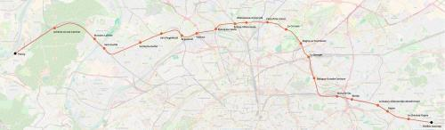

Tangentielle Seine-Saint-Denis
Tangentielle Seine-Saint-Denis
Chelles-Gournay - Poissy
Une nouvelle tangentielle pour le réseau Île-de-France
Planifiée par STIF (en tant que tangentielle nord puis ligne 11 du tram express), cette tangentielle serait étendue jusqu'à Poissy à l'ouest (correspondance avec le Cergyval et la tangentielle Yvelines) et Chelles-Gournay à l'est. (Correspondance Tangentielle Val-de-Marne et RER G). Elle formerait alors un système de rocade de moyenne banlieue en complément de la ligne 16 du métro.
La section Le Bourget - Épinay-sur-Seine est entrée en service en juillet 2017.
Carte

Cliquer pour agrandir
Stations
Si ce projet vous intéresse n'hésitez pas à le (re-)partagez sur les réseaux sociaux ou par courriel ou à en parler autour de vous.
Si vous souhaitez travailler à la concrétisation de ce projet, passez à l'action et contactez nous.
Commenter